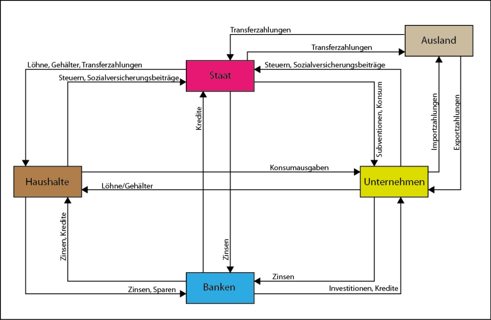
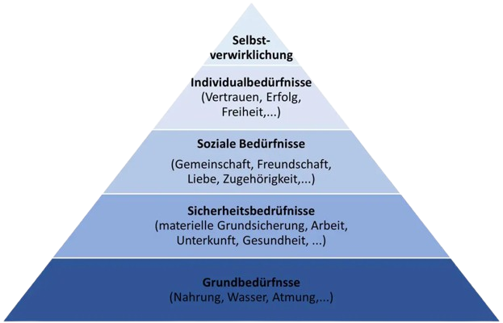

Wirtschaftliche Grundlagen
Was ist Wirtschaft?
Plannvoller Umgang mit knappen Ressourcen zu bestmöglichen Befriedigung unbegrenzter Bedürfnisse.
Problem: knappe Ressourcen / unbegrenzte Bedürfnisse
Betriebswirtschaftliche Produktionsfaktoren
Betriebswirtschaftliche Produktionsfaktoren sind die in Unternehmen eingesetzten Mittel, die gemeinsam zur Erstellung von Gütern und Dienstleistungen beitragen.
graph TD
A[Betriebswirtschaftliche<br>Produktionsfaktoren]
%% Hauptäste
A --> B[Dispositive Faktoren]
A --> C[Elementarfaktoren]
%% Dispositive Faktoren unterteilt
B --> B1[Leitung, Führungskräfte]
%% Elementarfaktoren unterteilt
C --> C1[Ausführende Arbeit]
C --> C2[Betriebsmittel]
C --> C3[Werkstoffe]
Ökonomische Prinzipien (Wirtschaftlichkeitsprinzip)
Das ökonomische Prinzip besagt, dass Wirtschaftssubjekte ihre Mittel so einsetzen, dass ein möglichst gutes Verhältnis zwischen Aufwand und Ergebnis entsteht.
- Minimalprinzip: Mit möglichst wenig Mitteln ein vorgegebenes Ziel erreichen.
- Maximalprinzip: Mit gegebenen Mitteln das Maximale erreichen.
- Optimumprinzip: Verhältnis zwischen Ertrag und Mitteleinsatz Optionen.
Knappheit verlangt Wirtschaften bedeutet Arbeitsteilung:
Weil Ressourcen begrenzt sind, müssen Menschen effizient zusammenarbeiten. Arbeitsteilung ermöglicht, Aufgaben aufzuteilen und dadurch Zeit, Kosten und Aufwand zu sparen.
- Innerfamiliär – Aufgabenverteilung innerhalb der Familie
- Betrieblich – Aufteilung von Arbeitsprozessen im Unternehmen
- Beruflich – Spezialisierung auf bestimmte Berufe oder Tätigkeiten
- Volkswirtschaftlich – Arbeitsteilung zwischen Branchen innerhalb eines Landes
- International – Spezialisierung und Austausch zwischen Ländern
| Vorteile der Arbeitsteilung | Nachteile der Arbeitsteilung |
|---|---|
| Höhere Produktivität | Abhängigkeiten |
| Kostenvorteile | Monotone Tätigkeiten |
| Bessere Qualität | Höhere Störanfälligkeit |
| Spezialisierung | Verlust ganzheitlicher Fähigkeiten |
3 Sektoren-Modell einer Volkswirtschaft

Primärer Sektor: Rohstoffgewinnung, Sekundärer Sektor: Rohstoffverarbeitung,
tertiärer Sektor: Dienstleistungen
(Erweiterter) Wirtschaftskreislauf

Von bilanz junkie - Wirtschaftskreislauf
{kind=link}
Bedürfnisse, Bedarf und Nachfrage
| Begriff | Definition |
|---|---|
| Bedürfnisse | Gefühl eines Mangels, mit dem Wunsch, diesen zu beseitigen |
| Bedarf | Mit Geld abgedecktes (kaufkraftgestütztes) Verlangen nach Gütern zur Befriedigung der Bedürfnisse |
| Nachfrage | Teil des Bedarfs, der auf dem Markt durch eine Kaufentscheidung realisiert wird |
Maslow‘sche Bedürfnispyramide

(Blau: Defizitbedürfnisse, Weiß: Wachstumsbedürfnisse)
Von herzbluttigerevents - mitarbeiterzufriedenheit-steigern
Arten von Gütern
graph TD
G[Güterarten]
FG[Freie Güter]
WG[Wirtschaftsgüter]
MG[Materielle Güter]
IMG[Inmaterielle Güter]
KG[Konsumgüter]
PG[Produktionsgüter]
R[Rechte]
DL[Dienstleistungen]
%% Beziehungen
G --> FG
G --> WG
WG --> MG
WG --> IMG
MG --> KG
MG --> PG
IMG --> R
IMG --> DL
Betriebstypologien
Betriebstypologien sind Klassifikationen von Unternehmen nach Merkmalen wie z.B. Größe.
Ökonomische, soziale und ökologische Ziele von Unternehmen
| Ökonomische Ziele | Soziale Ziele | Ökologische Ziele |
|---|---|---|
| Gewinnmaximierung | Gutes Betriebsklima | Vermeidung von Abfällen |
| Rentabilität | Mitarbeiterzufriedenheit | Einsparung von Energie |
| Absatz- und Umsatzsteigerung | Förderung der Gleichberechtigung | Nachhaltigkeit |
| Erhöhung des Marktanteils | Schaffung/Erhalt von Arbeitsplätzen | Umweltverträglichkeit |
| Produktivität | Ausbau sozialer Leistungen | Recycling |
| Senkung der Kosten | Vereinbarkeit von Beruf und Familie | Umweltfreundliche Produkte |
| Beseitigung der Konkurrenz | Zahlung angemessener Vergütung | Umstieg auf erneuerbare Energien |
| Kundenzufriedenheit | Sponsoring sozialer Projekte | Dämmung der Gebäude |
| … | … | … |